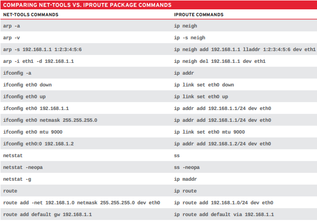

ip queries
addr IP address and property information
addr show all
addr show dev em1 show only em1
link manage and display state of interfaces
link show all
link show dev em1 show only em1
-s link statistics
route display and later routing table
route list all route entries in the kernel
maddr manage and display multicast IP addresses
maddr all devices
maddr show dev em1 multicast for em1
neigh show neighbour objects, known as ARP table for IPv4
neigh all neighbour objects
neigh show dev em1 ARP cache for dev em1
MODIFICATION
addr add add an address
ip addr add 192.168.1.1/24 dev em1
addr del delete an address
ip addr del 192.168.1.1/24 dev em1
link set alter status of interface
ip link set em1 up bring online
ip link set em1 down bring offline
ip link set em1 mtu 9000 set mtu on em1 to 9000
ip link set em1 promisc on set em1 to promisc
route add adding entries to routing table
ip route add default via 192.168.1.1 dev em1 add default via local gateway reached via em1
ip route add 192.168.1.0/24 via 192.168.1.1 route to 192.168.1.0/24 via gateway 192.168.1.1
ip route add 192.168.1.0/24 dev em1 route to 192.168.1.0/24 via dev em1
route delete deleting routes
ip route delete 192.168.1.0/24 via 192.168.1.1
route replace replace or add if not defined
ip route replace 192.168.1.0/24 dev em1
route get display route an address will take
ip route get 192.168.1.5
MANAGE ARP
neigh add add entry to arp table
ip niegh add 192.168.1.1 lladdr 1:2:3:4:5:6 dev em1 add 192.168.1.1 with MAC 1:2:3:4:5:6 to em1
neigh del invalidate an entry
ip neigh del 192.168.1.1 dev em1
niegh replace replace or add if not defined
IP vs Net-tools
